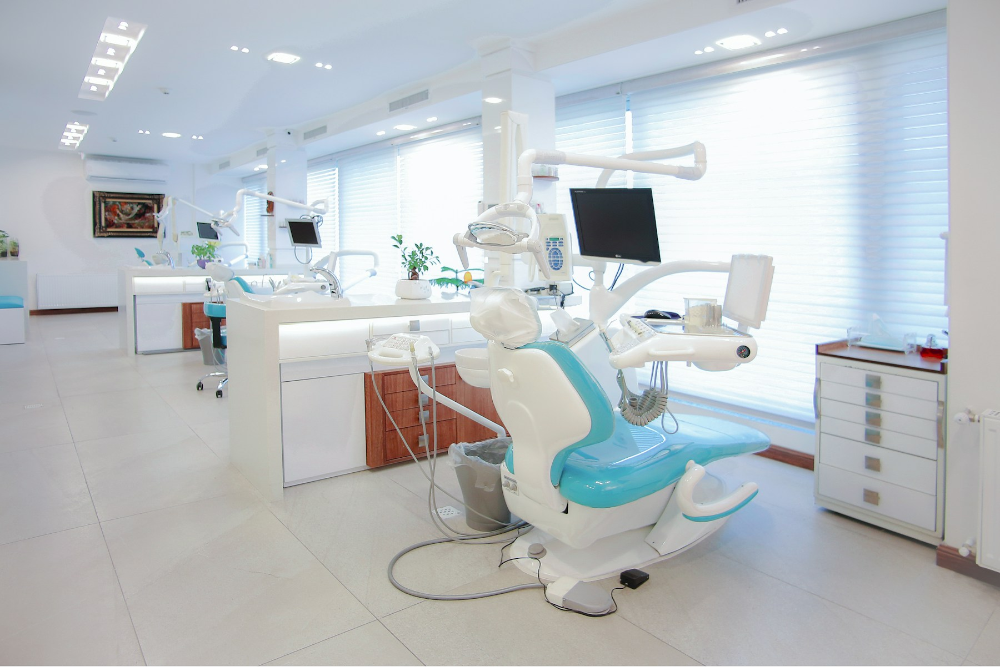

Clínica geral
Consultas de avaliação e orientação para o cuidado com a saúde bucal.
Informação clara, escuta e atenção em cada etapa. Conheça nossos cuidados e encontre um momento para sua avaliação.
Solicitar avaliação ↗Acolhimento · Clareza · Atenção individual

A Clínica Sorriso é uma clínica fictícia criada para mostrar uma presença digital acolhedora, com informações acessíveis para pacientes e famílias.
A proposta é apresentar os cuidados oferecidos, a equipe e as formas de contato, com uma comunicação clara e sem promessas de resultados.
Consultas de avaliação e orientação para o cuidado com a saúde bucal.
Acompanhamento, limpeza e orientações de higiene conforme avaliação profissional.
Avaliação do alinhamento dos dentes e das possibilidades de acompanhamento.
Acolhimento de crianças e orientação para famílias.
Avaliação individual para o planejamento dos cuidados necessários.
Conversa sobre necessidades e opções de reabilitação após avaliação.
Conteúdo ilustrativo. O diagnóstico e a indicação de qualquer procedimento dependem de avaliação por profissional habilitado.
Os perfis abaixo são fictícios. Nenhuma identidade ou inscrição profissional real é representada.
Perfil ilustrativo · Clínica geral e prevenção.
Perfil ilustrativo · Acompanhamento ortodôntico.
Um momento para conhecer o paciente e suas dúvidas.
Explicações acessíveis sobre as etapas do atendimento.
Organização e conforto para receber cada pessoa.
“Foi bom ter espaço para tirar minhas dúvidas com calma.”Ana P. · Personagem fictícia
“Encontrei as informações da clínica com facilidade.”Marcos R. · Personagem fictício
Depoimentos criados exclusivamente para demonstrar o layout.
Entre em contato para consultar a disponibilidade e conversar sobre o atendimento.
Interação ilustrativa. Nenhum agendamento, orçamento ou mensagem será enviado.
Avenida das Flores, 250 · Centro
Cidade fictícia, PR
Segunda a sexta: 8h às 18h
Sábado: 8h às 12h